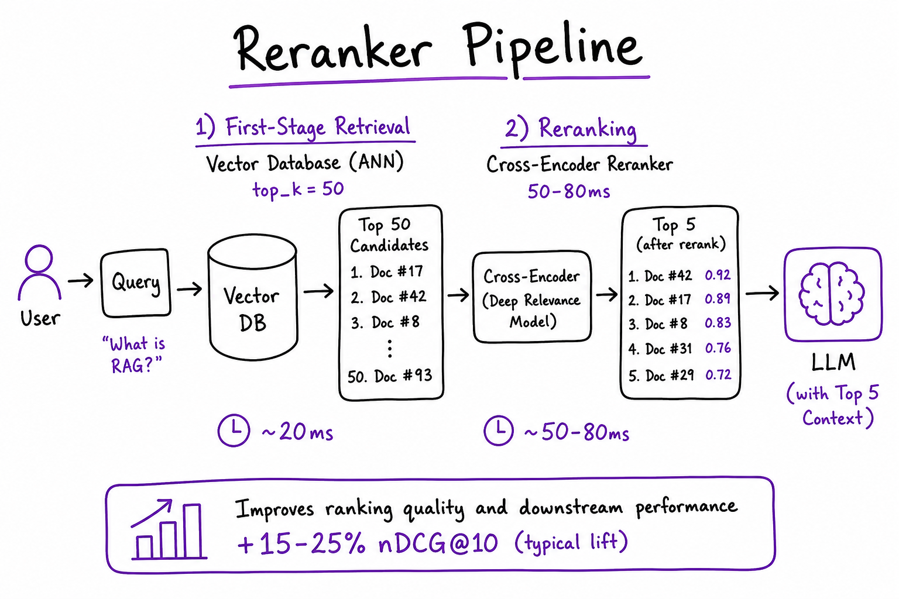
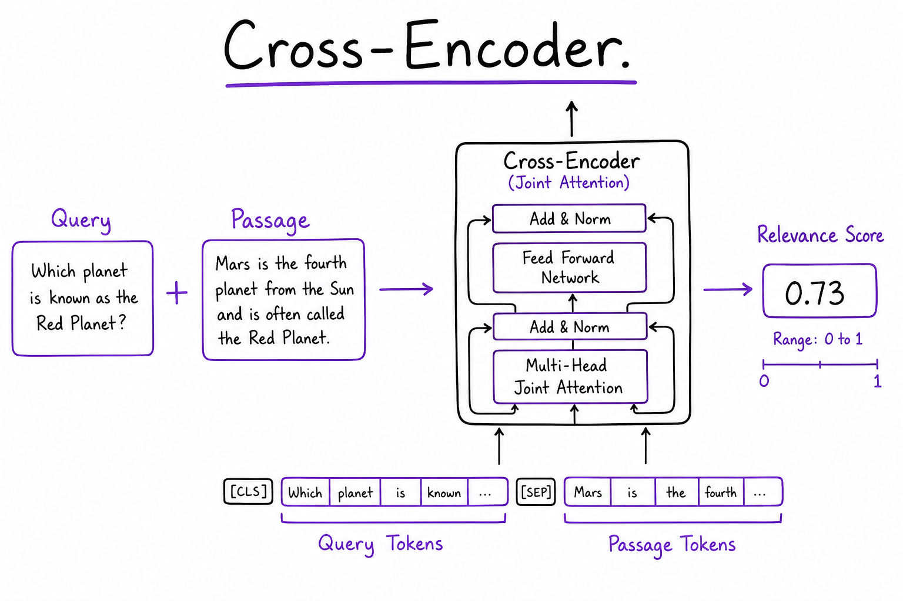
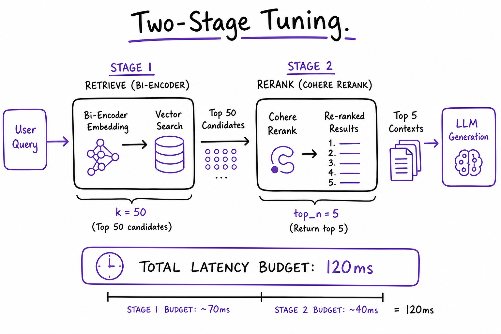

Rerankers // AI Tech
Two-stage retrieval for production RAG: bi-encoder pulls top-50 from your vector database fast, cross-encoder reranker scores query-passage pairs with joint attention, then top-5 chunks go to the LLM. Standard +15–25% nDCG precision boost after ANN recall.

Two-stage pipeline: vector DB top_k=50 (~20 ms) → cross-encoder rerank (~50–80 ms for 50 pairs) → top 5 chunks to LLM. Typical +15–25% nDCG vs bi-encoder alone in RAG stacks.
01 — What & Why
Rerankers solve the precision gap left by bi-encoder retrieval. Embeddings compare query and document vectors independently — fast but shallow. Cross-encoders run one transformer over the concatenated [query, passage] pair with full cross-attention — accurate but O(n) at query time. Industry standard: retrieve wide (k=50), rerank narrow (n=5).
Functional requirements
- Accept query + list of candidate passage texts (from ANN or hybrid fusion)
- Return relevance scores and top_n ranked passages
- Support batch scoring of pairs on GPU for latency
- Optional score threshold to drop irrelevant chunks (reduce hallucination)
- Fallback to ANN order on timeout
Non-functional requirements
- Latency: retrieve + rerank < 150 ms p99 for interactive RAG
- Quality: +10–25% nDCG@5 vs ANN-only on golden set
- Availability: degrade gracefully if reranker down
- Language: match reranker to query corpus language
Stack position: After embedding + vector DB (+ optional hybrid). Before LLM prompt assembly in RAG end-to-end.
01a — Core Concepts
| Term | Definition | Gotcha |
|---|---|---|
| Bi-encoder | Separate query/doc embeddings; cosine ANN | Retrieval stage only; see Embedding Models |
| Cross-encoder | Single model on [query, passage] | Cannot pre-index doc side |
| retrieve_k | ANN candidates before rerank (20–100) | Too low = miss gold doc; too high = latency |
| rerank_n | Passages passed to LLM (3–8) | More context = higher LLM cost/latency |
| nDCG@k | Normalized discounted cumulative gain | Primary offline metric for rerank A/B |
| Score threshold | Drop passages below e.g. 0.3 | Reduces noise; may over-filter short queries |
| Lite rerank | ms-marco-MiniLM on CPU | Dev only; not prod p99 at k=50 |
01b — API / Interface Surface
# Cohere Rerank — hosted, zero GPU ops
import cohere
co = cohere.Client()
result = co.rerank(
model="rerank-english-v3.0",
query=user_question,
documents=passage_texts, # top_k from vector DB
top_n=5,
return_documents=True,
)
for hit in result.results:
print(hit.index, hit.relevance_score, hit.document.text)
# Local cross-encoder — bge-reranker on GPU
from sentence_transformers import CrossEncoder
ce = CrossEncoder("BAAI/bge-reranker-v2-m3", max_length=512)
pairs = [[query, p] for p in passages]
scores = ce.predict(pairs, batch_size=32)
ranked = sorted(zip(passages, scores), key=lambda x: -x[1])[:5]
| API | Input | Output |
|---|---|---|
Cohere rerank | query, documents[], top_n | results[].relevance_score, index |
CrossEncoder predict | List of [query, doc] pairs | Float scores per pair |
| Jina / Voyage rerank API | Same shape as Cohere | Hosted alternative |
02 — When to Use / When NOT
| Scenario | Rerank? | Alternative |
|---|---|---|
| Production RAG Q&A | Yes — default stack | Only if hard <100 ms SLA |
| After hybrid BM25+vector | Yes — hybrid fixes recall; rerank fixes precision | Skipping rerank leaves fused-list noise |
| Tiny corpus (<500 docs) | Maybe | Full cross-encoder scan acceptable |
| Sub-100 ms total retrieve SLA | No / lite | Bi-encoder only; smaller k |
| Batch offline indexing | No | Rerank is query-time only |
03 — Architecture
User Query
|
v
+----------+ +----------------+ +-------------+ +-----+
| Embed | --> | Vector DB | --> | Reranker | --> | LLM |
| query | | top_k=50 | | top_n=5 | | |
+----------+ +----------------+ +-------------+ +-----+
^ | |
| | hybrid optional | scores logged
+--------------------+---------------------+
RAG orchestrator04 — Cross-Encoder Deep Dive

Cross-encoder joint attention on [query, passage] token sequence; outputs single relevance score 0–1. Cannot pre-compute document representations.
Bi-encoder: sim(embed(q), embed(d)) — dot product of independent vectors. Cross-encoder: score(q, d) = softmax(Transformer([CLS] q [SEP] d)) — every query token attends to every doc token.
- Why slower: 50 passages = 50 forward passes (batched on GPU)
- Why better: Captures term overlap, negation, entity match bi-encoder misses
- Max length: typically 512 tokens combined; truncate long chunks with head+tail
Interview one-liner: Retrieve with bi-encoder (indexable); rerank with cross-encoder (query-time). Never scan full corpus with cross-encoder.
05 — Model Comparison
| Model | Host | Language | Notes |
|---|---|---|---|
| Cohere rerank-english-v3.0 | API | English | Zero ops; ~100–200 ms for 50 docs |
| Cohere rerank-multilingual-v3.0 | API | 100+ langs | Match embed-multilingual stack |
| bge-reranker-v2-m3 | Self GPU | Multilingual | Best OSS; batch on A10 |
| ms-marco-MiniLM-L-6-v2 | CPU/GPU | English | Fast dev; weaker on hard sets |
06 — Pipeline Tuning

Pipeline tuning: sweep retrieve_k ∈ {20, 50, 100} and rerank_n ∈ {3, 5, 8}; plot nDCG@5 vs total latency; sweet spot often k=50, n=5 under 120 ms budget.
# Grid search on golden set (offline)
for k in [20, 50, 100]:
for n in [3, 5, 8]:
ndcg = eval_pipeline(retrieve_k=k, rerank_n=n)
lat = measure_p99_latency(k, n)
print(k, n, ndcg, lat)
- If recall@50 low on eval → increase k or fix embeddings/chunking first
- If latency high → decrease k or GPU batch tune; consider Cohere vs local
- Diminishing returns above k=50 for most corpora <10M chunks
07 — Latency Budget
| Stage | Typical p99 | Knobs |
|---|---|---|
| Query embed | 10–30 ms | Cache query vector |
| Vector ANN k=50 | 15–40 ms | HNSW ef_search; warm index |
| Cross-encoder 50 pairs GPU | 50–80 ms | batch_size=32; A10/L4 |
| Cohere rerank API | 100–200 ms | Network; reduce k |
| Total retrieve stage | <150 ms | Profile per component in traces |
08 — Hosted vs Self-Host
| Cohere / Jina API | bge-reranker GPU | |
|---|---|---|
| Ops | Zero | K8s GPU pool, model load |
| Cost at low QPS | Cheaper | GPU always-on expensive |
| Cost at high QPS | Per-call adds up | Fixed GPU $/hour wins |
| Air-gap | No | Yes |
| Latency | Network overhead | In-VPC 50–80 ms |
09 — Full RAG Retrieve Example
Complete retrieve + rerank stage wired into a RAG orchestrator. Traces each step for LangSmith.
import cohere
from openai import OpenAI
from langsmith import traceable
co = cohere.Client()
oai = OpenAI()
RETRIEVE_K = 50
RERANK_N = 5
SCORE_FLOOR = 0.28
@traceable(name="retrieve_and_rerank")
def retrieve_and_rerank(query: str, namespace: str):
# 1) Embed query (same model as ingest — see embedding-models sheet)
q_vec = oai.embeddings.create(
model="text-embedding-3-small",
input=[query],
dimensions=512,
).data[0].embedding
# 2) ANN from vector DB
ann = vector_db.query(
namespace=namespace,
vector=q_vec,
top_k=RETRIEVE_K,
include_metadata=True,
)
passages = [h.metadata["text"] for h in ann.matches]
# 3) Cross-encoder rerank
reranked = co.rerank(
model="rerank-english-v3.0",
query=query,
documents=passages,
top_n=RERANK_N,
)
# 4) Score threshold — drop irrelevant chunks
results = []
for hit in reranked.results:
if hit.relevance_score >= SCORE_FLOOR:
results.append({
"text": passages[hit.index],
"score": hit.relevance_score,
"chunk_id": ann.matches[hit.index].id,
})
if not results:
# Fallback: ANN top-3 if rerank filters everything
results = [{"text": passages[i], "score": None} for i in range(3)]
return results10 — Production & Ops
| Concern | Practice |
|---|---|
| Fallback | On reranker timeout >200 ms return ANN top-5; alert SRE |
| Logging | Log all 50 scores + final order; detect drift (mean score drop) |
| A/B | Shadow new reranker model; compare nDCG on sampled traffic |
| Tracing | LangSmith span rerank with input indices + scores output |
| Autoscale | GPU HPA on queue depth; min replicas >0 (cold start ~30s) |
11 — Where It Shows Up
- Vector Databases — rerank follows ANN top_k
- RAG End-to-End — standard stage 3 after retrieve
- Hybrid Search — rerank the fused BM25+vector list
- Embedding Models — fix bi-encoder recall before tuning rerank k
- LLM Observability — LangSmith rerank span with scores for debug
12 — Common Pitfalls
- Rerank 200+ passages — GPU/API timeout; cap k at 50–100
- Skip rerank because hybrid exists — hybrid improves recall, not final precision
- Wrong language model — English reranker on multilingual queries
- No fallback — reranker outage blocks entire RAG path
- Ignore score threshold — passing irrelevant chunk #5 causes hallucination
- Truncate query not passage — cross-encoder max_length applies to pair